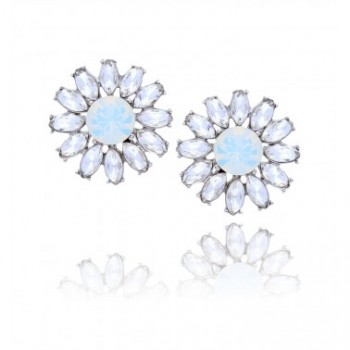

Auskarai - auksaspigiau.lt
- Auskarai su pusbrangiais akmenimis | Sidabro auskarai
Elegantiški ir išskirtiniai Tomas Gold sidabriniai auskarai yra gaminami kruopščių juvelyrų rankomis ir tik iš aukščiausios kokybės medžiagų. Maži ar dideli sidabriniai auskarai visada derės prie jūsų aprangos ir tiks bet kuriai progai. Sidabriniai auskarai suteiks jūsų įvaizdžiui išskirtinę natą ir sukurs harmonijos jausmą. - Auskarai - Decomundo
Auskarai su briliantais – tai universali dovana, kurią populiaru pirkti bet kurio amžiaus merginai ar moteriai. Nesvarbu, ar tai dovana krikšto dukrai, dukrai, žmonai ar motinai – iškilminga proga įteikiami auskarai su deimantais yra didelė vertybė, kuri gali būti perleidžiama iš kartos į kartą ir ilgus metus džiuginti ne ... - Auksiniai auskarai | ziedelis.lt
Mažyčiai ar ilgi, žėrintys ar matiniai, iš sidabro ar aukso – rankų darbo dailieji auskarai užkariaus kiekvienos moters širdį. Šie itin subtiliai atrodantys papuošalai gimė tam, kad skleistų džiugesį – rankų darbo auskarai taps nuostabia dovana ir jaunai merginai, ir per gyvenimą užtikrintai žengiančiai moteriai, ir elegantiškajai mamai, ir solidžiai senelei. - Auskarai su deimantais, briliantais (auksiniai) | Aukso ...
Auskarai - bene populiariausia papuošalų rūšis. Jie būdingi visoms kultūroms ir kraštams. Šiais laikais ausis prasiduria ne tik merginos, bet ir vaikinai, o auskarų kolekcijoje dažniausiai galima rasti tai, kas atspindi nuotaiką ar tiesiog tinka prie rūbų. - Auskarai - Norų Namai
Aukštos kokybės auksiniai ir sidabriniai auskarai internetu užsakomi greitai ir patogiai, pristatomi patikimai ir greitai. Pasirinkimo gausa Jus nustebins! Rasite ir kuklių, santūrių auskarų ir puoštų cirkoniu, turkiu, opalu bei kitais akmenimis. - Trollbeads | Auskarai internetu - Trollbeads.lt
Auskarai su briliantais atrodo nepaprastai įspūdingai, jie tiks įvairioms progoms, prie skirtingų drabužių derinių. Segint auskarus su briliantais kitų papuošalų nė nereikia, nes briliantų spindesys bus esminis akcentas moters įvaizdyje, kurio nereikia papildyti niekuo kitu. Auksiniai auskarai su brangakmeniais žavi savo ... - Auksiniai auskarai, Balto aukso auskarai, raudono aukso ...
Auskarai internetu. Auskarai puošia žmogaus veidą nuo neatmenamų laikų. Dar prieš 7000 metų jie jau buvo populiarūs senovės Azijoje – tiesa, daugiau kaip vyrų papuošalas. Egiptiečiai ir asirai auskarais demonstruodavo savo priklausymą aukštesnei gyventojų klasei. - Auskarai - auksaspigiau.lt
Auksiniai auskarai, pakabukai, žiedai, grandinėlės, apyrankės, pakabukai. Gavome siutinuką, labai gražūs papuošaliukai. Ačiu Jums labai , butinai ... - Gintaro auskarai internetu | saniston.com
Auskarai – vienas populiariausių moteriškų papuošalų. Auskarai – mediniai, sidabriniai ar pagaminti iš metalo papuošalai žinomi ir nešiojami jau daugybę metų, tačiau vis dar nepraranda savo nuostabaus žavesio. Šie papuošalai suteikia žavesio ir pasitikėjimo savo grožiu. - Auskarai į bambą internetu - Puosnidama.lt
Auskarai iš balto,raudono, geltono aukso internetu. Visus juvelyrinius dirbinius galite apžiūrėti pardavimo vietose ar siunčiame paštu. Grąžinimo garantija 14 d

Apie mus Pirkimo taisyklės ir sąlygos Kontaktai Prisijungti Registracija
NEMOKAMAS pristatymas į LP EXPRESS terminalus
0 0 € Žiedai Moteriški Vyriški Vestuviniai žiedai Klasikiniai vestuviniai 3mm Klasikiniai vestuviniai 4mm Klasikiniai vestuviniai 5mm Klasikiniai vestuviniai 6mm Auskarai Anglišku užsegimu Adatiniu užsegimu Kabantys Rinkės Burbulai Pirsingas Pakabukai Paprasti Religiniai Zodiakai Raidelės Grandinėlės Pintos Lietos Su pakabukais, karoliukais, rožančiai Su oda, kaučiuku, perlais Ant kojos Apyrankės Pintos Lietos Su pakabukais, karoliukais, siūlų Su oda, kaučiuku, perlais Vaikiškos reguliuojamo ilgio Kita Laikrodžiai Sagės Vintažinė juvelyrika Kaklaraiščio segtukai, sąsagos Suvenyrai Stalo įrankiai Briliantai (pločio filtras rodys pagal mm) Investicinis auksas Išparduotuvė 0 Filtruoti Rikiuoti: Naujausios Rodyti: 48Metalas
Auksas raudonas 714 Auksas geltonas 63 Auksas baltas 98 Sidabras rodžiuotas 24 FILTRUOTIAkmuo
Briliantai 201 Safyrai 21 Smaragdai 4 Perlai 54 Balti cirkoniai 347 Topazai 1 Spalvoti akmenys 87 Be akučių 241 FILTRUOTIGamintojas
Monodija 7 Sokolov 30 Karatov 33 FILTRUOTIParduotuvė
Gedimino g. 2 470 Maironio g. 15 85 Savanorių pr. 214a 157 Varnių g. 48b 191 FILTRUOTIBūsena
Naujas 875 Dėvėtas 28 FILTRUOTIKaina
Svoris, g
Ilgis, cm
Plotis, cm
Aukštis, cm
FILTRUOTI Išvalyti filtrą Pavadinimą A-Z Pavadinimą Z-A Kainą 1-100 Kainą 100-1 Seniausios Naujausios Dydį (mažiausi) Dydį (didžiausi) Svorį (lengviausi) Svorį (sunkiausi) Ilgį (trumpiausi) Ilgį (ilgiausi) 12 24 48 96 Žiedai Moteriški Vyriški Vestuviniai žiedai Klasikiniai vestuviniai 3mm Klasikiniai vestuviniai 4mm Klasikiniai vestuviniai 5mm Klasikiniai vestuviniai 6mm Auskarai Anglišku užsegimu Adatiniu užsegimu Kabantys Rinkės Burbulai Pirsingas Pakabukai Paprasti Religiniai Zodiakai Raidelės Grandinėlės Pintos Lietos Su pakabukais, karoliukais, rožančiai Su oda, kaučiuku, perlais Ant kojos Apyrankės Pintos Lietos Su pakabukais, karoliukais, siūlų Su oda, kaučiuku, perlais Vaikiškos reguliuojamo ilgio Kita Laikrodžiai Sagės Vintažinė juvelyrika Kaklaraiščio segtukai, sąsagos Suvenyrai Stalo įrankiai Briliantai (pločio filtras rodys pagal mm) Investicinis auksas Išparduotuvė Apie mus Pirkimo taisyklės ir sąlygos Kontaktai Prisijungti Registracija Facebook Pradžia Katalogas Auskarai Anglišku užsegimu Adatiniu užsegimu Kabantys Rinkės Burbulai PirsingasKategorijos
Žiedai 979 Auskarai 903 Anglišku užsegimu 464 Adatiniu užsegimu 228 Kabantys 87 Rinkės 65 Burbulai 24 Pirsingas 31 Pakabukai 450 Grandinėlės 276 Apyrankės 179 Kita 167 Išparduotuvė 138Metalas
Auksas raudonas 714 Auksas geltonas 63 Auksas baltas 98 Sidabras rodžiuotas 24 FILTRUOTIAkmuo
Briliantai 201 Safyrai 21 Smaragdai 4 Perlai 54 Balti cirkoniai 347 Topazai 1 Spalvoti akmenys 87 Be akučių 241 FILTRUOTIGamintojas
Monodija 7 Sokolov 30 Karatov 33 FILTRUOTIParduotuvė
Gedimino g. 2 470 Maironio g. 15 85 Savanorių pr. 214a 157 Varnių g. 48b 191 FILTRUOTIBūsena
Naujas 875 Dėvėtas 28 FILTRUOTIKaina
Svoris, g
Ilgis, cm
Plotis, cm
Aukštis, cm
FILTRUOTI Išvalyti filtrąAuskarai
Rikiuoti: Naujausios Pavadinimą A-Z Pavadinimą Z-A Kainą 1-100 Kainą 100-1 Seniausios Naujausios Dydį (mažiausi) Dydį (didžiausi) Svorį (lengviausi) Svorį (sunkiausi) Ilgį (trumpiausi) Ilgį (ilgiausi) Rodyti: 48 12 24 48 96 Maironio g. 15Auskarai su akmenukais
328 € -40% 197 € DAUGIAU Maironio g. 15Balto aukso auskarai
150 € -40% 90 € DAUGIAU Maironio g. 15Balto aukso auskarai
115 € -40% 69 € DAUGIAU Maironio g. 15Balto aukso auskarai
115 € -40% 69 € DAUGIAU Maironio g. 15Balto aukso auskarai
227 € -40% 136 € DAUGIAU Maironio g. 15Auskarai su akutėm
308 € -40% 185 € DAUGIAU Maironio g. 15Auskarai
173 € -40% 104 € DAUGIAU Gedimino g. 2Auksiniai auskarai su akmenukais
875 € -40% 525 € DAUGIAU Gedimino g. 2Auksiniai auskarai su akmenukais
575 € -40% 345 € DAUGIAU Gedimino g. 2Auksiniai auskarai su akmenukais
850 € -40% 510 € DAUGIAU Gedimino g. 2Auksiniai auskarai su akmenukais
740 € -40% 444 € DAUGIAU Gedimino g. 2Auksiniai auskarai su akmenukais
421 € -40% 253 € DAUGIAU Gedimino g. 2Auksiniai auskarai su akmenukais
760 € -40% 456 € DAUGIAU Gedimino g. 2Auksiniai auskarai su granatu
368 € -40% 221 € DAUGIAU Gedimino g. 2Auksiniai auskarai su akmenukais
1053 € -40% 632 € DAUGIAU Gedimino g. 2Auksiniai auskarai su akmenukais
796 € -40% 478 € DAUGIAU Varnių g. 48bAuksiniai auskarai
213 € -45% 117 € DAUGIAU Varnių g. 48bAuksiniai auskarai
416 € -45% 229 € DAUGIAU Varnių g. 48bAuksiniai auskarai
334 € -45% 184 € DAUGIAU Varnių g. 48bAuksiniai auskarai
407 € -45% 224 € DAUGIAU Varnių g. 48bAuksiniai auskarai
270 € -45% 149 € DAUGIAU Varnių g. 48bAuksiniai auskarai
391 € -45% 215 € DAUGIAU Gedimino g. 2Balto aukso auskarai rinkės
345 € -40% 207 € DAUGIAU Gedimino g. 2Balto aukso auskarai rinkės
512 € -40% 307 € DAUGIAU Gedimino g. 2Balto aukso auskarai rinkės
241 € -40% 145 € DAUGIAU Gedimino g. 2Balto aukso auskarai rinkės
149 € -40% 89 € DAUGIAU Gedimino g. 2Auksiniai auskarai karūnos
249 € -40% 149 € DAUGIAU Gedimino g. 2Balto aukso auskarai
444 € -40% 266 € DAUGIAU Gedimino g. 2Balto aukso auskarai
169 € -40% 101 € DAUGIAU Gedimino g. 2Balto aukso auskarai
169 € -40% 101 € DAUGIAU Gedimino g. 2Auksiniai auskarai su akmenukais
294 € -40% 176 € DAUGIAU Gedimino g. 2Auksinis auskaras į nosį
34 € -10% 31 € DAUGIAU Gedimino g. 2Auksinis auskaras į nosį
34 € -10% 31 € DAUGIAU Gedimino g. 2Auksinis auskaras į nosį
34 € -10% 31 € DAUGIAU Gedimino g. 2Auksinis auskaras į nosį
34 € -10% 31 € DAUGIAU Gedimino g. 2Auksinis auskaras į nosį
25 € -10% 23 € DAUGIAU Gedimino g. 2Auksinis auskaras į nosį
25 € -10% 23 € DAUGIAU Gedimino g. 2Auksinis auskaras
65 € -40% 39 € DAUGIAU Gedimino g. 2Auksiniai auskarai su akmenukais
531 € -40% 319 € DAUGIAU Gedimino g. 2Auksiniai auskarai su akmenukais
277 € -40% 166 € DAUGIAU Gedimino g. 2Auksiniai auskarai su akmenukais
408 € -40% 245 € DAUGIAU Gedimino g. 2Auksiniai auskarai burbulai
340 € -40% 204 € DAUGIAU Gedimino g. 2Auksiniai auskarai burbulai
329 € -40% 197 € DAUGIAU Gedimino g. 2Auksiniai auskarai burbulai
332 € -40% 199 € DAUGIAU Gedimino g. 2Auksiniai auskarai burbulai
249 € -40% 149 € DAUGIAU Gedimino g. 2Auksiniai auskarai
105 € -40% 63 € DAUGIAU Gedimino g. 2Auksiniai auskarai
101 € -40% 61 € DAUGIAU Gedimino g. 2Auksiniai auskarai rinkės
192 € -40% 115 € DAUGIAU 1 2 3 4 5 6 7 19 NEMOKAMAS pristatymas į LP EXPRESS terminalus Saugus atsiskaitymas Pinigų grąžinimo garantijaSusisiekime
Sekite mus
Katalogas Apie mus Pirkimo taisyklės ir sąlygos Kontaktai© 2020 Visos teisės saugomos. Sprendimas digis.lt
